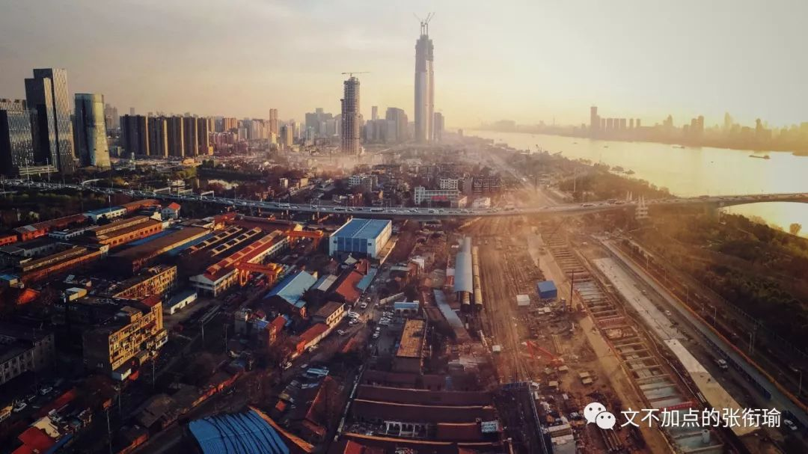
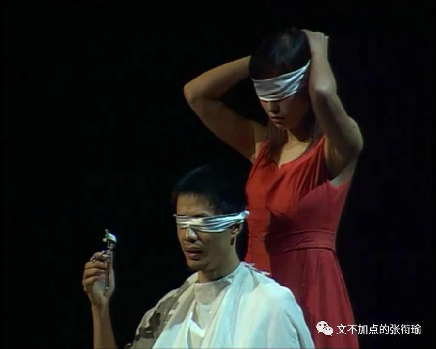

本文是张衔瑜第111篇推文
共计1242个字
好快啊。
从前年这个时候，为了给自己一个生日礼物，就开了一个公众号自己写点什么。
第一篇当时还是破蛋推。
满一年的时候，我开开心心地写了一篇《又吃成长快乐啦||文不加点的张衔瑜一岁ler》。
最早在写的时候，我完全不知道自己会写一些什么内容。探讨过很多，也描绘过很多。
以前的排版很花哨对吧。
其实哪怕到现在，我仍然在秀米的后台保留有当时进行版面处理的蒙版。有人和我讨论过字号的问题，我的解决办法只是：自己打开微信右上角，然后拖动字号进行调节。
我不大能完全地一下想到，过去一年里，究竟写了多少文字。一篇篇地来看，既然现在是第111篇，按照每篇差不多两千五百字的篇幅，加之正好看了一下这两年自己写的篇幅数量相仿：那么55×2500=137500，差不多十三四万的样子估计看来。
大学之前总会列一些清单什么的，不管是列着要去远足一次、通宵一次、还是恋爱一次，我在校车上当时和小班某森说：“想出一本自己的诗集、随笔集或者什么文选，总归是铅字了之后的纸质稿。”
现在看来，哪怕不管写下的其他文字——原来写的新闻、公文、优美的实验报告还有自己的日记，那现在也已经足够了。
这一年还是很多的地方。
去年写生日推的时候，还没有把北京的这一篇算进来。今年写生日推之前，再到北京（小张小张，卑微开张）却已经扎扎实实地完成了，只是安的名字因为没有太多旅游成分、多在随笔思考，所没有叫上尬走的名字。
但尬走远不止北京。
去年夏天从北京实习回来之后，八月底就去了新加坡。在去新加坡之前，还专门应姬哲湍而写了一篇湘江水逝楚云飞||域见。后来关于长沙的还有一篇是作为本土长沙人，专门拿着自己的嘴巴为朋友们测评臭豆腐的。主注意这里选择了茶颜悦色作为参比。

这两篇文章多少成为了我在纯粹写游记时候的最高峰。
学期中总是没有太多机会。
这个意思是，只要想，就还是有的。
刚刚入手稳定器的时候，汉阳火车站有一次，光谷有一次，鲁磨路也有一次。甚至我之后自己寝室停水了，连紫菘都有一次。
于是我用100张图，给2018年做了一个结束。
很喜欢的那一张，在江汉关羡慕情侣们看着他们眼中看不到的车轨，原载于特别提到说一周图集的那一次。朝花夕拾算第二次。
这是我可以好好看到的美，我还想再加到今天的推文里边来：

寒假开开心心，过完了大学最后一个会集中考试的考试周。在武汉小众的展览馆写了一篇未写完的不具名之后，又坐着京广线去了一趟长春。返回之后，就去了合肥展开新的一次实习。
过完年，收假上来。
三月份被爆肝的GRE搞得头疼。虽然更早之前就已经在开始说秩序与不万能的GRE。
考完之后不吐不快，一连写了四篇：生活应该怎样继续、“对抗焦虑”是如何被制造出来的、别说跳出舒适圈现在的问题是没有舒适圈、以及最后一篇在小吃城吃肠粉时候开始慢慢平静下来了的推文。

接下来四月，开局就是和Amber一起在外面用愚人节私奔的方式开始了这一个月。尔后，大学第二次到了深圳。一篇没写完，还有意难平的暴戾标准化。
当然前天我也又到了深圳，这是大学第三次了。两次之前并没有隔上几个月，但一次去的城市东北角快到东莞，一次跑的西北角晃着晃着就到了惠州。
这一次来深圳，走访了学校之后，昨天又到了香港。虽然前年来过，现在的局势并不太明朗，但是大丈夫。没记错的话应该是十二年前，也是在香港Disney迪士尼过的自己八岁生日。时间真的很快。
话剧。
这真的是我自己生活当中非常重要的一个组成部分。虽然，虽然占比真的不高，好在每次都给我以很大的冲击，或者换而言之，给我以很多spiritual精神上的重载唤醒。
忘掉是一般人唯一能做的事，可是我决定不忘掉她。

《恋爱的犀牛》确实是一部大名如雷贯耳的好评剧，不管多久我重新开始说起黄昏，都总会觉得有一股要咆哮着说出点什么的劲儿。恋爱要不要苟延残喘？这篇就是写在观剧之后的。
另一个虽然标题看不出来，打翻可乐，但是内容实实在在地是在我看完《空中花园谋杀案》这个先锋音乐剧之后随缘写的。
此外的还有纸牌屋里边出来的我今作力所能及的解说，金庸先生千古之后写的一篇关于倚天屠龙记。不得不提的是成龙历险记，叁万年下饭番剧。
《末代皇帝》的那一篇影评也不错。主要是电影可以。
PS：扎扎实实的读后感真的很可。
沙雕。
这兴许是最令人激动的衔瑜形式了。
不管是我最早开始只是有一搭没一搭地说着聚酯不回来、夹带一点点在故事集里边。

其实这些都是我很喜欢的东西，一点也不会疲劳驾驶。毕竟就是有毛病的脑洞，随缘消食就像前几天吃完烤肉之后的空腹吃饭。
就像进校时候看到的那些学长学姐，每个人都作为过来人给出了很多很多的建议，也许是自己感受过的痛过的。但事实上，没有人好好地说出了，到底怎么才能好好地对待生活。只是说要这么做，但是怎么看待呢？
后来，大家毕业了。我也快了。
有一些评论稿，让我我依然觉得自己很精妙。比如解构迷惑行为的这一篇、调研西一豆浆的这篇、对于只关心进入坎而不看坎后边的认知学讨论、还有注意力失焦。
认知科学真的好玩。
我每次看自己写的这些标题，有的还好，看着标题就像上面这些一样，大概可以想起来自己写了些什么 like 加班。但是有的，我甚至看完标题，看完题图，也看完了默认抓取前54个字的副标题区域，还是想不起自己写了些什么鬼东西在里边。
我只记得是自己第一次主动加标点的第十三周周一的早课和白日梦、看过千与千寻之后的一个心情随笔。和郁结坐下来谈妥一次。
心情这个东西很魔幻。
可能有过一些什么事情，也可能没有。
可能我想好好说些什么，也可能不说。
就像好想去讨论问题，但是一讨论就嫌累。小张慌是不会慌张，就是一直怕一手好牌打得稀烂，正常而又安分。
讲了的不过传播对立、狂欢数据、语言单一怎么导致思维钝化、思路的重载又来一遍。
最近，在香港见到了一些不一样的事情，虽然这些在我之前的脑内中都有出现过。
我这么说吧，不管是对某个地方抱有强烈的幻想：觉得这个地方如何地好或者如何地坏，最好地消弭这样一种暴烈情绪的办法，即是去真实而切实地在那个地方生活上一段时间。感受一下大家之为一样的平权个体是如何地调谐生活关系。
天下的乌鸦一般黑。没有一只啄木鸟是不咬人的（好像说是蛇的话更合理一些
附一张前景图：

文不加点的张衔瑜，两岁的这一天，和之前的每一天也没有什么不同。以前生日在一起的人，来来去去；正如街上的行人走走停停、港湾的浪花卷曲舒展。
照例这里应当是一连串的感恩，和不少的致谢。
但我更希望这里保有了歉疚和愧疚。对于之前多少年荒唐的不荒唐的、少不更事或少年老成的。林林总总。
展望的失望了、表白的被拒了，求学的失学了、喷饭的噎饭了。
不寄希望于一刻的时来运转，哪怕那看起来是多么地触手可及；
好好看着到过的每一座山、每一片湖，那里的每一朵云都在歌唱、每一颗星星都在眨眼。
张衔瑜，两岁了。